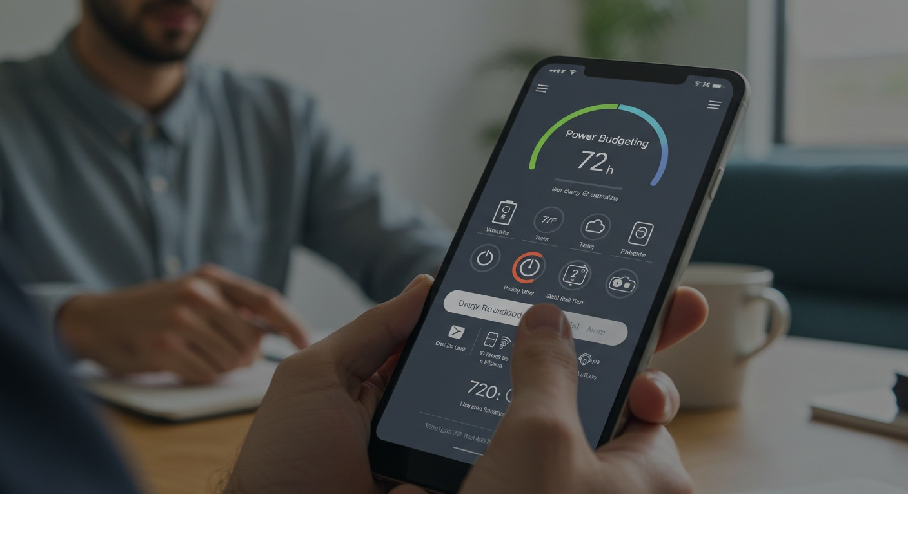

Power Budgeting: 72-Hour Device Plan
Objective
Keep essential devices alive for 72 hours by budgeting watt‑hours, scheduling charge windows, and ditching vampire loads.
Inventory
- Phones, radios, lights, medical devices—list battery sizes (Wh) and chargers.
Plan
- Prioritize: Comms → light → medical → comfort.
- Windows: 09:00–11:00 and 17:00–19:00 for charging from solar/car.
- Modes: Airplane mode, low‑power, screen dim, radio low power.
Math
Phone 12 Wh/day × 3 days = 36 Wh; add radio 8 Wh/day = 24 Wh; total 60 Wh → plan panel/power bank capacity accordingly.
Real Example
Household ran two phones, two headlamps, and an FRS set off a 100 Wh bank topped with a 20 W panel and a car inverter window—no dead devices.
Checklist
- Power bank(s) with known Wh
- Solar panel or car inverter
- Charge cables labeled
Contingencies
- Cloudy days → shift to car charging; ration screen time.
After‑Action
Log actual draws to resize your kit accurately.
← Previous | All Articles | Next →